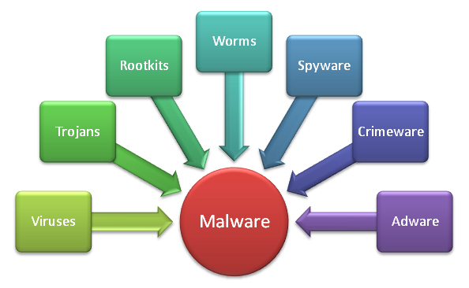
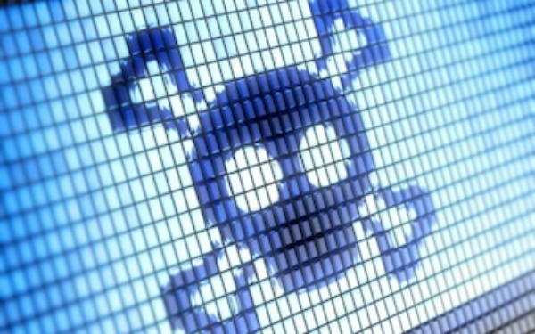

I malware costituiscono una categoria di codice nocivo che comprende virus, worm e trojan horse. I malware dannosi utilizzeranno per la diffusione gli strumenti di comunicazione più comuni, compresi i worm inviati tramite posta elettronica e instant messaging e i trojan horse ricevuti da siti Web e file infetti scaricati da connessioni peer to peer. I malware cercheranno inoltre di sfruttare le vulnerabilità esistenti sui sistemi rendendo il proprio ingresso facile e silenzioso.
DEFINIZIONE :
Il malware letteralmente “malicious Software” in italiano “programma maligno” può essere definito come:
“una sequenza di codice progettata per danneggiare intenzionalmente un sistema, i dati che contiene o comunque alterare il suo normale funzionamento, all'insaputa dell'utente.”
Per sequenza di codice si intende righe di codice scritte in linguaggi di basso-alto livello (Assembler, C, Visual Basic, Delphi..) con lo scopo di danneggiare o alterare il normale funzionamento di un sistema informatico, per fare ciò il malware sfrutta uno o più punti vulnerabili.
I punti vulnerabili possono essere:
- Utenti “non esperti”
- Software e Sistema Operativo vulnerabili
- Infrastruttura di rete debole ( mal configurazione delle regole di accesso e dei servizi )
- Inadeguate misure di sicurezza (mancanza di software di protezione)
